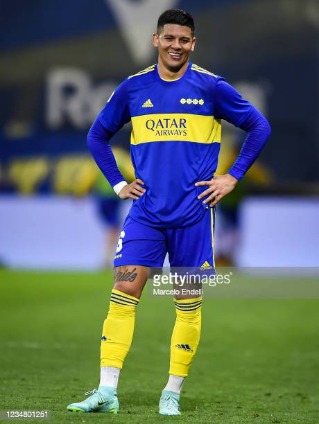
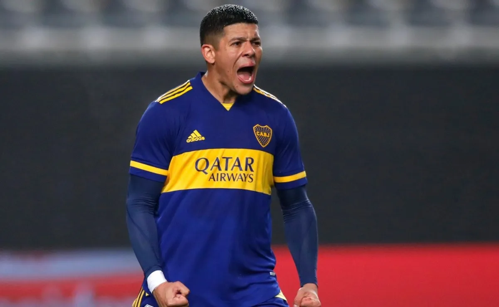
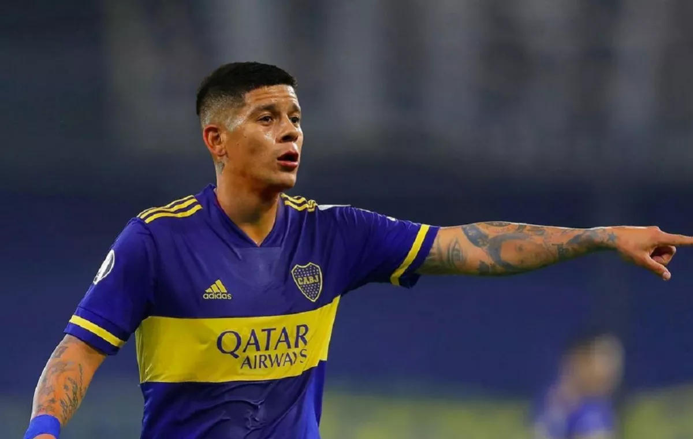

Información sobre el jugador
Nacimiento: La Plata, Buenos Aires, Argentina
Nacionalidad: Argentina
Altura: 1.87
Peso: 82kg
Biografía
Salido de la cantera del club "león", debutó en el año 2008 en el partido Colón 0 - Estudiantes de La Plata 1 de la Primera División de Argentina.
Alejandro Sabella lo convocó para disputar el Mundial de Clubes 2009 disputando el partido final frente al Fútbol Club Barcelona. Finalmente Estudiantes sería subcampeón del mundo.
En el club platense permaneció hasta el Torneo Apertura 2010 para luego, con 20 años dar el salto al fútbol ruso.
Spartak de Moscú
En diciembre de 2010 fue transferido al FC Spartak de Moscú de Rusia, que pago dos millones de euros por su transferencia. Convirtió su único gol en este equipo el 20 de abril de 2011, abriendo el marcador para la victoria de su escuadra por 2-1 sobre el Krasnodar, por los cuartos de final de la Copa de Rusia. Permaneció en el club hasta cumplir los 22 años, para luego emigrar al fútbol portugués.
Sporting de Lisboa
Luego de dos años en el club, en julio de 2012 es transferido al Sporting de Lisboa de Portugal. por £3.5 millones. Debuta en el equipo el 19 de agosto de 2012, jugando el partido entero y recibiendo una tarjeta amarilla en el empate final por 0-0 con Vitória. Marcó su primer gol en el club el 28 de abril de 2013, en la victoria por 2-1 sobre Nacional.
Recibió su primera tarjeta roja en un partido de Liga contra el FC Porto el 7 de octubre de 2012, recogiendo dos amonestaciones en tres minutos, ya que el Sporting cayó por 2-0. Rojo jugó casi siempre de defensa central en su primera temporada en Portugal, de vez en cuando era lateral izquierdo, ya que el equipo tuvo una relativamente mala temporada, terminando séptimo en la liga.
En el segundo partido de la temporada 2013-14, Rojo anotó su primer gol de la temporada, anotando el segundo gol del Sporting en su victoria 4-0 sobre Académica de Coimbra. El 19 de abril de 2014, Rojo fue expulsado en un partido de Primeira Liga contra Os Belenenses, pero Sporting celebran una victoria por 1-0. En una temporada mejorado, él contribuyó seis goles con Sporting terminando como subcampeón.
Manchester United
Luego de 2 años en el Sporting de Lisboa es transferido al Manchester United por 20 millones de euros y el préstamo de una temporada del jugador Nani.
El 14 de septiembre hizo su debut en Old Trafford donde United ganó por primera vez en la temporada, jugando la totalidad de la victoria 4-0 sobre el Queens Park Rangers. Rojo salió en camilla en la derrota por 1-0 del United en el derbi de Mánchester el 2 de noviembre, obteniendo una lesión en el hombro por una acción con su compatriota Martín Demichelis. Más tarde se confirmó que se había dislocado el hombro, añadiendo a las lesiones defensivas junto a Jonny Evans y Phil Jones.
Convierte su primer gol el 3 de febrero de 2015, marcando el 2 a 0 frente al Cambridge United FC por la FA Cup, partido que terminaría 3 a 0 a favor del equipo de Mánchester. También marcó por Premier League ante Bournemouth el 4 de marzo de 2017, en un encuentro que terminó 1-1. Éste fue su primer gol en Old Trafford.
Vuelta a Estudiantes
En enero de 2020, Rojo vuelve a Estudiantes de La Plata a préstamo por 6 meses, con la intención de mostrarse en el fútbol argentino de cara a la Copa América de ese año. Fue recibido por una multitud en el Estadio Jorge Luis Hirschi. Sin embargo, sufrió un desgarro que le impidió debutar con el pincha en ese mes. Finalmente el 17 de febrero debutó frente a Defensa y Justicia en la derrota 2-1 como local. A pesar de esto siguió acumulando lesiones que le impedían seguir jugando con regularidad. Debido a la pandemia mundial de Covid-19 y a la suspensión de la Copa de la Superliga Argentina, Rojo apenas pudo jugar un partido en su breve regreso.
Trayectoria en Boca Juniors
El 1 de febrero de 2021, se confirma su llegada a Boca Juniors en condición de libre, tras finalizar su vínculo con el Manchester United. Al día siguiente, en su primera conferencia de prensa, declaró que se sentía muy motivado por llegar a "el club más grande de la Argentina" y ansioso por ganar la Copa Libertadores. Sin embargo, se lesionó en su primer entrenamiento. Debutó oficialmente el 14 de marzo en el empate 1-1 contra River Plate, ingresando por Gonzalo Maroni. En octubre de ese mismo año convirtió su primer tanto con el Xeneize frente a Huracán. A fines de ese mismo año ganó la Copa Argentina 2019-20, su primer título con Boca.
En abril de 2022 convirtió su segundo tanto con el Xeneize, de penal, ante Arsenal de Sarandi.
Galería de imágenes



Volver al Inicio <-